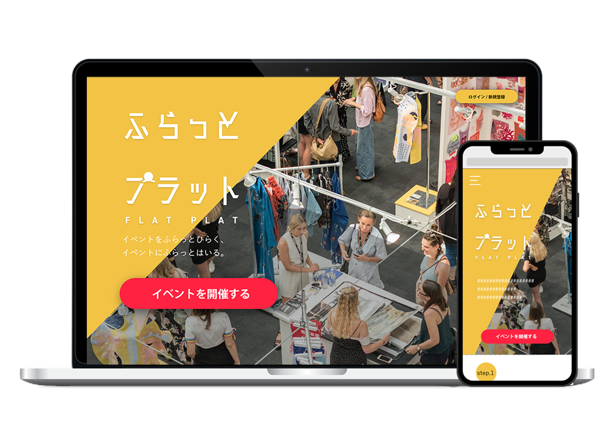
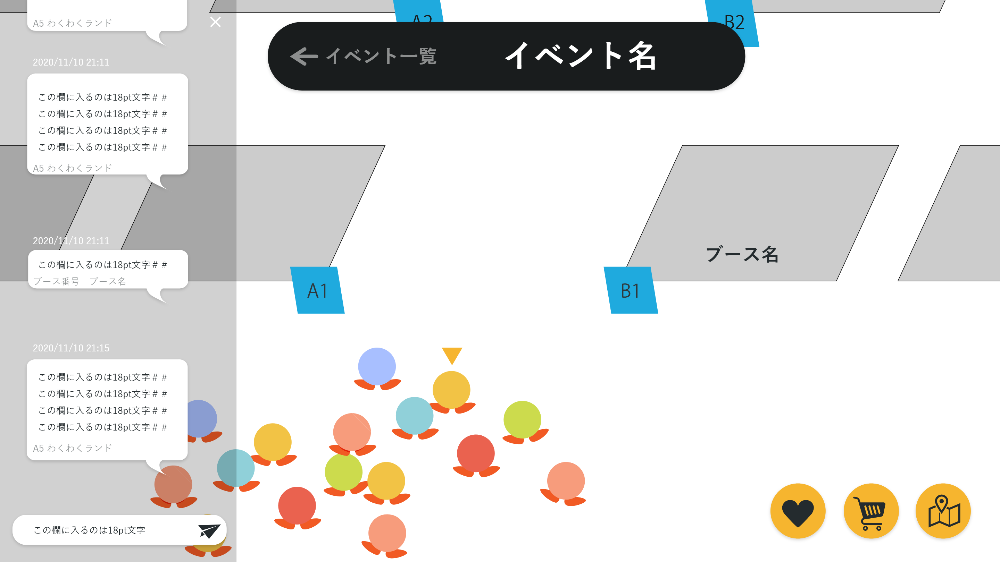
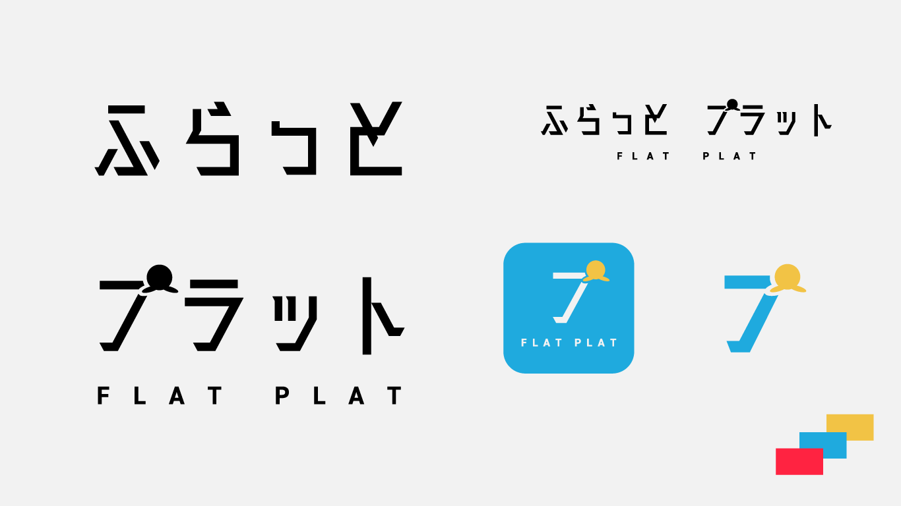

ふらっとプラット
~
- Ai
- Xd
about
1年通して行うグループワークで、イベントの申し込みから実際にイベントを開催するまで全て行えるオンライン展示会のプラットフォームを企画しました。 メインターゲットは一般の人で、デザインフェスタのような誰でもイベントに出展できるプラットフォームになっています。
個人での担当箇所はサイト/サービスロゴ・アイコン・申し込みサイト・実際のイベント会場のデザインです。

オンライン展示会プラットフォーム
オリンピックや大阪万博の影響で展示会の会場不足が指摘されて いることを知り、場所を取らずに開催できるオンライン展示会プラットフォームの デザインを行いました。
コンセプト

オンラインでもみんなで楽しみたい!
展示会場へ直接行ってイベントなどに参加する理由は「空間の共有」だと考えました。そこでどのくらいの人が イベントに参加しているのか一目でわかるように簡単なアバターを表示し、 来ている人がどのようなことを感じているのかが分かるようにチャット欄を作成しました。
ロゴ

親しみやすさと風通しのよさ
日本語フォント/廻想体 ネクスト UP B
英字ロゴ/DIN2014
誰でも気軽に立ち寄ってほしい・イベントを開いてほしいというサービスのコンセプトと、オンライン展示会という次世代・近未来な雰囲気を出しました。
デザインアイデアなど
親しみやすさと風通しのよさ
日本語フォント/廻想体 ネクスト UP B
英字ロゴ/DIN2014
誰でも気軽に立ち寄ってほしい・イベントを開いてほしいというサービスのコンセプトと、オンライン展示会という次世代・近未来な雰囲気を出しました。